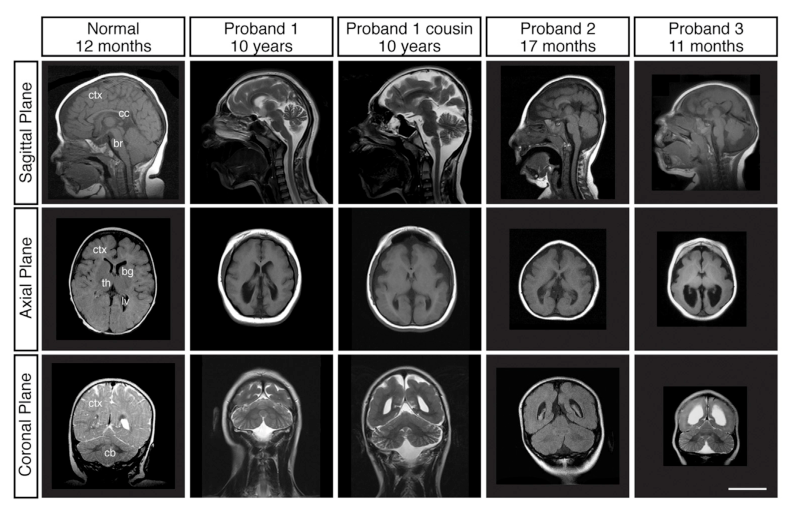

KATNB1-related cortical malformation is an autosomal recessive microlissencephaly and complex malformation-of-cortical-development disorder caused by biallelic KATNB1 variants that impair the p80 regulatory subunit of katanin. The entry is not split by imaging labels such as pachygyria, polymicrogyria-like cortex, simplified gyration, or heterotopia because these findings can be organized under one shared mechanism: defective katanin microtubule remodeling disrupts centrosome, cilium, and mitotic-spindle function in neural progenitors, alters asymmetric progenitor division and cortical neuron output, and also impairs microtubule-dependent neurogenesis and neuronal migration. The clinical result is congenital or early-onset microcephaly with lissencephaly-spectrum cortical malformation, severe developmental impairment, callosal/ventricular abnormalities, and variable associated neurologic features.
Ask a research question about KATNB1-related Cortical Malformation. OpenScientist will conduct autonomous deep research using the Disorder Mechanisms Knowledge Base and PubMed literature (typically 10-30 minutes).
Do not include personal health information in your question. Questions and results are cached in your browser's local storage.
name: KATNB1-related Cortical Malformation
creation_date: "2026-06-12T03:31:46Z"
category: Mendelian
description: >-
KATNB1-related cortical malformation is an autosomal recessive
microlissencephaly and complex malformation-of-cortical-development disorder
caused by biallelic KATNB1 variants that impair the p80 regulatory subunit of
katanin. The entry is not split by imaging labels such as pachygyria,
polymicrogyria-like cortex, simplified gyration, or heterotopia because these
findings can be organized under one shared mechanism: defective katanin
microtubule remodeling disrupts centrosome, cilium, and mitotic-spindle
function in neural progenitors, alters asymmetric progenitor division and
cortical neuron output, and also impairs microtubule-dependent neurogenesis
and neuronal migration. The clinical result is congenital or early-onset
microcephaly with lissencephaly-spectrum cortical malformation, severe
developmental impairment, callosal/ventricular abnormalities, and variable
associated neurologic features.
parents:
- Microcephaly
- Lissencephaly
- malformation of cortical development
notes: >-
No disease_term is assigned here because the curation boundary is a coherent
KATNB1/katanin mechanism rather than a generic ontology lump. The entry
corresponds to names used in the literature such as KATNB1-related
microlissencephaly and lissencephaly 6 with microcephaly, but its curation
skeleton is defined by biallelic KATNB1 loss and katanin-dependent progenitor
and migration mechanisms.
references:
- reference: PMID:25521378
title: Mutations in KATNB1 cause complex cerebral malformations by disrupting asymmetrically dividing neural progenitors.
- reference: PMID:28079116
title: Katanin p80, NuMA and cytoplasmic dynein cooperate to control microtubule dynamics.
- reference: PMID:34202629
title: Whole Exome Sequencing Is the Minimal Technological Approach in Probands Born to Consanguineous Couples.
- reference: PMID:28111201
title: Human iPSC-Derived Cerebral Organoids Model Cellular Features of Lissencephaly and Reveal Prolonged Mitosis of Outer Radial Glia.
pathophysiology:
- name: Biallelic KATNB1 Loss and Katanin Microtubule-Severing Defect
description: >-
Homozygous or compound heterozygous deleterious KATNB1 variants impair the
p80 regulatory subunit of the katanin microtubule-severing complex. This
disrupts interaction of mutant KATNB1 with KATNA1 and other
microtubule-associated proteins, placing altered microtubule remodeling at
the top of the pathograph.
conforms_to: neural_progenitor_centrosome_spindle_dysfunction#Centrosome and Mitotic Spindle Perturbation
role: trigger
genes:
- preferred_term: KATNB1
term:
id: hgnc:6217
label: KATNB1
cell_types:
- preferred_term: neural progenitor cell
term:
id: CL:0011020
label: neural progenitor cell
- preferred_term: radial glial cell
term:
id: CL:0000681
label: radial glial cell
biological_processes:
- preferred_term: microtubule severing
term:
id: GO:0051013
label: microtubule severing
modifier: DECREASED
- preferred_term: microtubule cytoskeleton organization
term:
id: GO:0000226
label: microtubule cytoskeleton organization
modifier: DYSREGULATED
- preferred_term: microtubule-based process
term:
id: GO:0007017
label: microtubule-based process
modifier: DYSREGULATED
evidence:
- reference: PMID:25521378
reference_title: Mutations in KATNB1 cause complex cerebral malformations by disrupting asymmetrically dividing neural progenitors.
supports: SUPPORT
evidence_source: HUMAN_CLINICAL
snippet: >-
Exome sequencing analysis of over 2,000 children with complex
malformations of cortical development identified five independent (four
homozygous and one compound heterozygous) deleterious mutations in
KATNB1, encoding the regulatory subunit of the microtubule-severing enzyme
Katanin.
explanation: >-
Establishes biallelic deleterious KATNB1 variants and identifies the
affected protein as the regulatory katanin subunit.
- reference: PMID:25521378
reference_title: Mutations in KATNB1 cause complex cerebral malformations by disrupting asymmetrically dividing neural progenitors.
supports: SUPPORT
evidence_source: IN_VITRO
snippet: >-
Mitotic spindle formation is defective in patient-derived fibroblasts, a
consequence of disrupted interactions of mutant KATNB1 with KATNA1, the
catalytic subunit of Katanin, and other microtubule-associated proteins.
explanation: >-
Patient-derived cells connect mutant KATNB1 to defective katanin/MAP
interactions and a proximal spindle phenotype.
downstream:
- target: Centrosome-Cilium and Mitotic-Spindle Dysregulation
description: >-
Loss of KATNB1-dependent microtubule remodeling perturbs centrosome,
cilium, and mitotic-spindle behavior.
- name: Centrosome-Cilium and Mitotic-Spindle Dysregulation
description: >-
KATNB1 deficiency disrupts centrosome/spindle-pole microtubule remodeling,
mitotic-spindle formation, and cilium-linked developmental signaling. This
branch links the microtubule-severing defect to progenitor division defects
and to cilium/Hedgehog biology observed in KATNB1-deficient systems.
conforms_to: neural_progenitor_centrosome_spindle_dysfunction#Centrosome and Mitotic Spindle Perturbation
role: central_effector
cell_types:
- preferred_term: neural progenitor cell
term:
id: CL:0011020
label: neural progenitor cell
- preferred_term: radial glial cell
term:
id: CL:0000681
label: radial glial cell
biological_processes:
- preferred_term: mitotic spindle organization
term:
id: GO:0007052
label: mitotic spindle organization
modifier: DYSREGULATED
- preferred_term: cilium assembly
term:
id: GO:0060271
label: cilium assembly
modifier: DYSREGULATED
- preferred_term: Hedgehog signaling
term:
id: GO:0007224
label: smoothened signaling pathway
modifier: DYSREGULATED
evidence:
- reference: PMID:25521378
reference_title: Mutations in KATNB1 cause complex cerebral malformations by disrupting asymmetrically dividing neural progenitors.
supports: SUPPORT
evidence_source: MODEL_ORGANISM
snippet: >-
kat80 loss specifically affects the asymmetrically dividing neuroblasts,
which display supernumerary centrosomes and spindle abnormalities during
mitosis, leading to cell cycle progression delays and reduced cell
numbers.
explanation: >-
Fly neural-progenitor evidence links KATNB1/katanin loss to centrosome,
spindle, cell-cycle, and cell-number effects in asymmetrically dividing
neural precursors.
- reference: PMID:34202629
reference_title: Whole Exome Sequencing Is the Minimal Technological Approach in Probands Born to Consanguineous Couples.
supports: SUPPORT
evidence_source: MODEL_ORGANISM
snippet: >-
katnb1 null mutant mouse embryos revealed the role of this gene in
regulating cilia number and function within the hedgehog signaling
pathway
explanation: >-
Literature synthesis supports a cilium/Hedgehog branch downstream of
KATNB1 loss.
downstream:
- target: Abnormal Asymmetric Neural Progenitor Division
description: >-
Centrosome and mitotic-spindle defects alter neural-progenitor division
and cell-cycle progression.
- target: Microtubule-Dependent Neurogenesis and Neuronal Migration Failure
description: >-
The same microtubule/spindle-pole apparatus contributes to neurogenesis
and neuronal migration.
- name: Abnormal Asymmetric Neural Progenitor Division
description: >-
KATNB1 loss alters the divisions of neural progenitors that normally control
cortical neuron production. The best-supported progenitor phenotype is not a
generic reduction in brain size but defective asymmetric neuroblast or
radial-glial division, delayed cell-cycle progression, and reduced
progenitor-derived cell number.
conforms_to: neural_progenitor_centrosome_spindle_dysfunction#Abnormal Progenitor Division and Fate Choice
role: central_effector
cell_types:
- preferred_term: neural progenitor cell
term:
id: CL:0011020
label: neural progenitor cell
- preferred_term: radial glial cell
term:
id: CL:0000681
label: radial glial cell
biological_processes:
- preferred_term: asymmetric cell division
term:
id: GO:0008356
label: asymmetric cell division
modifier: DYSREGULATED
- preferred_term: neurogenesis
term:
id: GO:0022008
label: neurogenesis
modifier: DECREASED
- preferred_term: maintenance of cell number
term:
id: GO:0098727
label: maintenance of cell number
modifier: DECREASED
evidence:
- reference: PMID:25521378
reference_title: Mutations in KATNB1 cause complex cerebral malformations by disrupting asymmetrically dividing neural progenitors.
supports: SUPPORT
evidence_source: MODEL_ORGANISM
snippet: >-
kat80 loss specifically affects the asymmetrically dividing neuroblasts,
which display supernumerary centrosomes and spindle abnormalities during
mitosis, leading to cell cycle progression delays and reduced cell
numbers.
explanation: >-
Supports the neural-progenitor division branch of the KATNB1 mechanism.
downstream:
- target: Reduced Cortical Output and Microlissencephaly
description: >-
Defective progenitor division and cell-number maintenance reduce cortical
neuron output and contribute to microcephaly and simplified gyration.
- name: Microtubule-Dependent Neurogenesis and Neuronal Migration Failure
description: >-
KATNB1/p80 also cooperates with NuMA and cytoplasmic dynein at the
centrosome/spindle pole. Human patient-derived iPSC and brain-organoid data
support a second branch in which altered microtubule organization impairs
neurogenesis and neuronal migration, explaining cortical dyslamination
features beyond progenitor depletion alone.
conforms_to: microtubule_dependent_neuronal_migration_failure#Microtubule-Based Neuronal Motility Failure
role: central_effector
cell_types:
- preferred_term: cortical neuron
term:
id: CL:0000540
label: neuron
- preferred_term: radial glial cell
term:
id: CL:0000681
label: radial glial cell
biological_processes:
- preferred_term: neuron migration
term:
id: GO:0001764
label: neuron migration
modifier: DECREASED
- preferred_term: microtubule-based movement
term:
id: GO:0007018
label: microtubule-based movement
modifier: DYSREGULATED
- preferred_term: neurogenesis
term:
id: GO:0022008
label: neurogenesis
modifier: DYSREGULATED
evidence:
- reference: PMID:28079116
reference_title: Katanin p80, NuMA and cytoplasmic dynein cooperate to control microtubule dynamics.
supports: SUPPORT
evidence_source: IN_VITRO
snippet: >-
p80 regulates microtubule (MT) remodeling in combination with NuMA
(nuclear mitotic apparatus protein) and cytoplasmic dynein.
explanation: >-
Identifies the p80/NuMA/dynein microtubule-remodeling pathway underlying
the migration branch.
- reference: PMID:28079116
reference_title: Katanin p80, NuMA and cytoplasmic dynein cooperate to control microtubule dynamics.
supports: SUPPORT
evidence_source: MODEL_ORGANISM
snippet: >-
siRNA-mediated depletion of p80 and/or NuMA induced abnormal mitotic
phenotypes in cultured mouse embryonic fibroblasts and aberrant
neurogenesis and neuronal migration in the mouse embryonic brain.
explanation: >-
Model data support abnormal neurogenesis and neuronal migration after p80
depletion.
- reference: PMID:28079116
reference_title: Katanin p80, NuMA and cytoplasmic dynein cooperate to control microtubule dynamics.
supports: SUPPORT
evidence_source: IN_VITRO
snippet: >-
Importantly, these results were confirmed in p80-mutant harboring
patient-derived induced pluripotent stem cells and brain organoids.
explanation: >-
Directly captures the patient-derived iPSC and brain-organoid new-approach
model evidence requested for this batch.
downstream:
- target: Reduced Cortical Output and Microlissencephaly
description: >-
Impaired neurogenesis and migration converge with the progenitor branch on
cortical malformation.
- name: Reduced Cortical Output and Microlissencephaly
description: >-
Progenitor division defects, reduced cell number, abnormal neurogenesis, and
impaired neuronal migration converge on a small, malformed cerebral cortex.
The endpoint includes microcephaly, lissencephaly or simplified gyration,
callosal and ventricular abnormalities, and variable heterotopia or
polymicrogyria-like findings.
conforms_to: microtubule_dependent_neuronal_migration_failure#Cortical Dyslamination and Neuronal Ectopia
role: outcome
locations:
- preferred_term: cerebral cortex
term:
id: UBERON:0000956
label: cerebral cortex
cell_types:
- preferred_term: cortical neuron
term:
id: CL:0000540
label: neuron
biological_processes:
- preferred_term: cerebral cortex development
term:
id: GO:0021987
label: cerebral cortex development
modifier: DYSREGULATED
- preferred_term: neuron migration
term:
id: GO:0001764
label: neuron migration
modifier: DECREASED
evidence:
- reference: PMID:28079116
reference_title: Katanin p80, NuMA and cytoplasmic dynein cooperate to control microtubule dynamics.
supports: SUPPORT
evidence_source: HUMAN_CLINICAL
snippet: >-
Human mutations in KATNB1 (p80) cause severe congenital cortical
malformations, which encompass the clinical features of both microcephaly
and lissencephaly.
explanation: >-
Supports the combined microcephaly-lissencephaly endpoint in human
KATNB1 disease.
- reference: PMID:28079116
reference_title: Katanin p80, NuMA and cytoplasmic dynein cooperate to control microtubule dynamics.
supports: SUPPORT
evidence_source: IN_VITRO
snippet: >-
Taken together, our findings provide valuable insights into the
pathogenesis of severe microlissencephaly, in which p80 and NuMA delineate
a common pathway for neurogenesis and neuronal migration via MT
organization at the centrosome/spindle pole.
explanation: >-
Connects KATNB1/p80 microtubule organization to severe microlissencephaly
through neurogenesis and migration.
phenotypes:
- name: Microcephaly
description: >-
Microcephaly is a core feature of reported KATNB1-related disease and may
be congenital with further postnatal worsening in some individuals.
phenotype_term:
preferred_term: Microcephaly
term:
id: HP:0000252
label: Microcephaly
onset:
onset_category: CONGENITAL
evidence:
- reference: PMID:34202629
reference_title: Whole Exome Sequencing Is the Minimal Technological Approach in Probands Born to Consanguineous Couples.
supports: SUPPORT
evidence_source: HUMAN_CLINICAL
snippet: >-
Microcephaly is a characteristic feature of KATNB1-related syndrome
explanation: >-
Supports microcephaly as a characteristic human phenotype.
- name: Lissencephaly / Simplified Gyral Pattern
description: >-
Affected individuals have lissencephaly-spectrum malformation with
simplified gyration, pachygyria, polymicrogyria-like cortex, or related
cortical folding abnormalities.
phenotype_term:
preferred_term: Lissencephaly
term:
id: HP:0001339
label: Lissencephaly
evidence:
- reference: PMID:28079116
reference_title: Katanin p80, NuMA and cytoplasmic dynein cooperate to control microtubule dynamics.
supports: SUPPORT
evidence_source: HUMAN_CLINICAL
snippet: >-
Human mutations in KATNB1 (p80) cause severe congenital cortical
malformations, which encompass the clinical features of both microcephaly
and lissencephaly.
explanation: >-
Supports lissencephaly-spectrum cortical malformation in KATNB1 disease.
- name: Simplified Gyral Pattern
description: >-
Simplified gyral pattern is one of the recurrent neuroimaging descriptors in
KATNB1 case summaries.
phenotype_term:
preferred_term: Simplified gyral pattern
term:
id: HP:0009879
label: Simplified gyral pattern
evidence:
- reference: PMID:34202629
reference_title: Whole Exome Sequencing Is the Minimal Technological Approach in Probands Born to Consanguineous Couples.
supports: SUPPORT
evidence_source: HUMAN_CLINICAL
snippet: >-
The main neuroimaging features are pachygyria, polymicrogyria, simplified
gyral pattern, periventricular heterotopias, and bilateral nodular
heterotopia of gray matter in the irradiated corona.
explanation: >-
Supports simplified gyral pattern among the reported neuroimaging
findings.
- name: Ventriculomegaly
description: >-
Ventricular enlargement is part of the reported neuroimaging spectrum.
phenotype_term:
preferred_term: Ventriculomegaly
term:
id: HP:0002119
label: Ventriculomegaly
evidence:
- reference: PMID:34202629
reference_title: Whole Exome Sequencing Is the Minimal Technological Approach in Probands Born to Consanguineous Couples.
supports: SUPPORT
evidence_source: HUMAN_CLINICAL
snippet: >-
Posteriorly enlarged ventricles, enlarged cisterna magna, Dandy–Walker
variant, and cystic enlargement of the fourth ventricle was reported in a
few cases.
explanation: >-
Supports ventriculomegaly as part of the KATNB1 imaging spectrum.
- name: Abnormal Corpus Callosum Morphology
description: >-
The corpus callosum may be short, thin, or partly/completely absent.
phenotype_term:
preferred_term: Abnormal corpus callosum morphology
term:
id: HP:0001273
label: Abnormal corpus callosum morphology
evidence:
- reference: PMID:34202629
reference_title: Whole Exome Sequencing Is the Minimal Technological Approach in Probands Born to Consanguineous Couples.
supports: SUPPORT
evidence_source: HUMAN_CLINICAL
snippet: >-
Abnormalities of the corpus callosum are common, ranging from agenesis,
either partial or complete, to shortening.
explanation: >-
Supports corpus callosum abnormalities in the reported KATNB1 phenotype
spectrum.
- name: Gray Matter Heterotopia
description: >-
Heterotopia is variably reported and is treated as an associated imaging
branch rather than a separate disease entry.
phenotype_term:
preferred_term: Gray matter heterotopia
term:
id: HP:0002282
label: Gray matter heterotopia
evidence:
- reference: PMID:34202629
reference_title: Whole Exome Sequencing Is the Minimal Technological Approach in Probands Born to Consanguineous Couples.
supports: SUPPORT
evidence_source: HUMAN_CLINICAL
snippet: >-
The main neuroimaging features are pachygyria, polymicrogyria, simplified
gyral pattern, periventricular heterotopias, and bilateral nodular
heterotopia of gray matter in the irradiated corona.
explanation: >-
Supports heterotopia as a reported imaging feature.
- name: Global Developmental Delay / Psychomotor Impairment
description: >-
Developmental outcomes vary, but delayed or severely impaired psychomotor
development is frequent in reported cases.
phenotype_term:
preferred_term: Global developmental delay
term:
id: HP:0001263
label: Global developmental delay
evidence:
- reference: PMID:34202629
reference_title: Whole Exome Sequencing Is the Minimal Technological Approach in Probands Born to Consanguineous Couples.
supports: SUPPORT
evidence_source: HUMAN_CLINICAL
snippet: >-
Psychomotor development was regular in two patients, with a large degree
of variability in the others, with five patients never achieving
independent walking and five patients with absent speech.
explanation: >-
Supports variable but often substantial developmental impairment.
- name: Hypertonia
description: >-
Hypertonia, especially involving the lower limbs, is reported in the
aggregated KATNB1 case literature.
phenotype_term:
preferred_term: Hypertonia
term:
id: HP:0001276
label: Hypertonia
evidence:
- reference: PMID:34202629
reference_title: Whole Exome Sequencing Is the Minimal Technological Approach in Probands Born to Consanguineous Couples.
supports: SUPPORT
evidence_source: HUMAN_CLINICAL
snippet: >-
Neurological findings showed hypertonia mainly in the lower limbs in eight
patients out of 14.
explanation: >-
Supports hypertonia as a recurrent neurologic feature.
- name: Seizures / Epilepsy
description: >-
Seizures have been described as part of the KATNB1 clinical spectrum, but
the exact fetched abstracts/full-text snippets used for this entry do not
provide a clean quotable cohort-level seizure statement.
phenotype_term:
preferred_term: Seizure
term:
id: HP:0001250
label: Seizure
genetic:
- name: KATNB1
association: Causative
gene_term:
preferred_term: KATNB1
term:
id: hgnc:6217
label: KATNB1
evidence:
- reference: PMID:25521378
reference_title: Mutations in KATNB1 cause complex cerebral malformations by disrupting asymmetrically dividing neural progenitors.
supports: SUPPORT
evidence_source: HUMAN_CLINICAL
snippet: >-
Exome sequencing analysis of over 2,000 children with complex
malformations of cortical development identified five independent (four
homozygous and one compound heterozygous) deleterious mutations in
KATNB1, encoding the regulatory subunit of the microtubule-severing enzyme
Katanin.
explanation: >-
Establishes KATNB1 as the causal gene in multiple independent affected
families.
- reference: PMID:34202629
reference_title: Whole Exome Sequencing Is the Minimal Technological Approach in Probands Born to Consanguineous Couples.
supports: SUPPORT
evidence_source: HUMAN_CLINICAL
snippet: >-
An NGS panel including 83 genes associated with brain malformations and
microcephaly showed an homozygous splice site variant in KATNB1:
NM_005886.3:c.[1416 + 1del]; [1416 + 1del].
explanation: >-
Adds a later likely pathogenic homozygous KATNB1 splice-site case.
treatments:
- name: Supportive and Rehabilitative Care
description: >-
No disease-modifying KATNB1-targeted therapy is established. Management is
supportive and directed at severe developmental impairment, motor
disability, feeding or respiratory complications when present, and family
support.
treatment_term:
preferred_term: supportive care
term:
id: MAXO:0000950
label: supportive care
- name: Anti-Seizure Medication
description: >-
Symptomatic pharmacotherapy is appropriate for seizures or epilepsy when
present.
treatment_term:
preferred_term: pharmacotherapy
term:
id: NCIT:C15986
label: Pharmacotherapy
- name: Genetic Counseling
description: >-
Autosomal recessive recurrence-risk counseling, carrier testing, and
reproductive counseling are appropriate after molecular diagnosis.
treatment_term:
preferred_term: genetic counseling
term:
id: MAXO:0000079
label: genetic counseling
discussions:
- discussion_id: gap_katnb1_organoid_branch_scope
prompt: >-
Which KATNB1 phenotypes observed in patient-derived iPSCs, brain organoids,
mouse embryos, zebrafish, and fly neuroblasts correspond to the same human
cortical pathograph, and which require a distinct human progenitor or
migration branch?
kind: HUMAN_MODEL_MISMATCH
status: OPEN
attaches_to:
- pathophysiology#Centrosome-Cilium and Mitotic-Spindle Dysregulation
- pathophysiology#Abnormal Asymmetric Neural Progenitor Division
- pathophysiology#Microtubule-Dependent Neurogenesis and Neuronal Migration Failure
rationale: >-
KATNB1 has unusually strong new-approach model evidence because
patient-derived iPSCs and brain organoids confirm parts of the model-system
phenotype. The remaining curation gap is not whether organoid evidence
exists, but how to weight the organoid migration/neurogenesis findings
against fly neuroblast, zebrafish, mouse, and fibroblast findings when
deciding whether a subtype-specific branch is justified.
evidence:
- reference: PMID:28079116
reference_title: Katanin p80, NuMA and cytoplasmic dynein cooperate to control microtubule dynamics.
supports: SUPPORT
evidence_source: IN_VITRO
snippet: >-
Importantly, these results were confirmed in p80-mutant harboring
patient-derived induced pluripotent stem cells and brain organoids.
explanation: >-
Directly supports patient-derived iPSC and brain-organoid evidence for
KATNB1.
- reference: PMID:28111201
reference_title: Human iPSC-Derived Cerebral Organoids Model Cellular Features of Lissencephaly and Reveal Prolonged Mitosis of Outer Radial Glia.
supports: SUPPORT
evidence_source: OTHER
snippet: >-
Recent work has uncovered critical cellular and molecular differences
between cortical development in humans and mice, further underscoring the
need to develop human model systems.
explanation: >-
Supports retaining human/model translatability as a gap even when mouse
evidence is mechanistically strong.
proposed_experiments:
- experiment_id: exp_katnb1_isogenic_organoid_spindle_migration_rescue
name: KATNB1 isogenic cortical-organoid spindle and migration rescue experiment
description: >-
Generate patient-derived and engineered human cortical organoids carrying
representative biallelic KATNB1 loss-of-function or hypomorphic variants,
compare them with isogenic corrected and knock-in controls, and assay
radial-glial spindle behavior, cilium/Hedgehog readouts, oRG-like
progenitor dynamics, neuronal migration, and rescue by wild-type KATNB1 or
targeted modulation of the p80/NuMA/dynein microtubule pathway.
experiment_type:
preferred_term: isogenic cortical organoid rescue experiment
model_systems:
- name: KATNB1 human iPSC-derived cortical organoid
description: >-
Three-dimensional human cortical organoid with radial-glial progenitors,
oRG-like progenitors, and migrating cortical neurons, derived from
patient-specific or engineered iPSCs.
experimental_model_type: ORGANOID
namo_type: namo:Organoid
organism:
preferred_term: human
term:
id: NCBITaxon:9606
label: Homo sapiens
tissue_term:
preferred_term: cerebral cortex
term:
id: UBERON:0000956
label: cerebral cortex
cell_types:
- preferred_term: radial glial cell
term:
id: CL:0000681
label: radial glial cell
- preferred_term: neural progenitor cell
term:
id: CL:0011020
label: neural progenitor cell
- preferred_term: migrating cortical neuron
term:
id: CL:0000540
label: neuron
conditions:
- KATNB1-related cortical malformation
- microlissencephaly
- katanin microtubule-severing defect
cell_source: Patient-derived or CRISPR-engineered human induced pluripotent stem cells
culture_system: Three-dimensional cortical organoid with live imaging, immunostaining, and single-cell readouts
perturbations:
- name: KATNB1 variant correction or biallelic knock-in
target: pathophysiology#Biallelic KATNB1 Loss and Katanin Microtubule-Severing Defect
genes:
- preferred_term: KATNB1
term:
id: hgnc:6217
label: KATNB1
description: >-
Correct patient variants or introduce representative KATNB1 variants in
an isogenic human iPSC background to separate variant mechanism from
donor background.
- name: p80/NuMA/dynein pathway rescue
target: pathophysiology#Microtubule-Dependent Neurogenesis and Neuronal Migration Failure
description: >-
Test rescue with wild-type KATNB1 or targeted modulation of the
p80/NuMA/dynein microtubule-remodeling pathway.
readouts:
- name: Progenitor spindle, cilium, and division-mode readouts
target: pathophysiology#Abnormal Asymmetric Neural Progenitor Division
biological_processes:
- preferred_term: mitotic spindle organization
term:
id: GO:0007052
label: mitotic spindle organization
modifier: DYSREGULATED
- preferred_term: cilium assembly
term:
id: GO:0060271
label: cilium assembly
modifier: DYSREGULATED
- preferred_term: asymmetric cell division
term:
id: GO:0008356
label: asymmetric cell division
modifier: DYSREGULATED
assays:
- preferred_term: live-cell imaging assay
- preferred_term: immunostaining
direction: POSITIVE
- name: Neuronal migration and cortical-output readouts
target: pathophysiology#Microtubule-Dependent Neurogenesis and Neuronal Migration Failure
biological_processes:
- preferred_term: neuron migration
term:
id: GO:0001764
label: neuron migration
modifier: DECREASED
- preferred_term: neurogenesis
term:
id: GO:0022008
label: neurogenesis
modifier: DECREASED
assays:
- preferred_term: live-cell imaging assay
- preferred_term: single-cell transcriptomic profiling
direction: NEGATIVE
controls:
- name: Isogenic corrected organoids
description: Matched organoids in which the patient KATNB1 variant is corrected.
- name: Isogenic knock-in organoids
description: Wild-type-background organoids carrying the introduced KATNB1 variant.
decision_criterion: >-
A shared KATNB1 disease skeleton is supported if mutant organoids
reproduce spindle/cilium, progenitor-output, and neuronal-migration
readouts that are rescued by KATNB1 correction and reproduced by knock-in.
A subtype branch is justified only if specific variants reproducibly
separate progenitor depletion, ciliary/Hedgehog dysfunction, or migration
defects.
would_support:
- pathophysiology#Centrosome-Cilium and Mitotic-Spindle Dysregulation
- pathophysiology#Abnormal Asymmetric Neural Progenitor Division
- pathophysiology#Microtubule-Dependent Neurogenesis and Neuronal Migration Failure
evidence:
- reference: PMID:28079116
reference_title: Katanin p80, NuMA and cytoplasmic dynein cooperate to control microtubule dynamics.
supports: SUPPORT
evidence_source: IN_VITRO
snippet: >-
Importantly, these results were confirmed in p80-mutant harboring
patient-derived induced pluripotent stem cells and brain organoids.
explanation: >-
Existing KATNB1 patient-derived iPSC and organoid evidence makes an
isogenic rescue experiment directly actionable.
- discussion_id: gap_katnb1_cilia_spindle_migration_branch_weights
prompt: >-
How much of KATNB1-related cortical malformation is caused by
cilium/Hedgehog dysregulation, mitotic-spindle/asymmetric-division failure,
reduced progenitor survival, and postmitotic neuronal migration failure?
kind: KNOWLEDGE_GAP
status: OPEN
attaches_to:
- pathophysiology#Centrosome-Cilium and Mitotic-Spindle Dysregulation
- pathophysiology#Abnormal Asymmetric Neural Progenitor Division
- pathophysiology#Microtubule-Dependent Neurogenesis and Neuronal Migration Failure
rationale: >-
The literature supports several connected mechanisms, but the current case
counts and model systems do not yet cleanly partition which branch drives
which imaging or developmental feature. This matters for curation because
subtype-specific branches should be used only when the same skeleton is
retained and a branch has evidence that differs by variant, cell type, or
phenotype.
evidence:
- reference: PMID:25521378
reference_title: Mutations in KATNB1 cause complex cerebral malformations by disrupting asymmetrically dividing neural progenitors.
supports: SUPPORT
evidence_source: MODEL_ORGANISM
snippet: >-
Loss of KATNB1 orthologs in zebrafish (katnb1) and flies (kat80) results
in microcephaly, recapitulating the human phenotype.
explanation: >-
Model-organism evidence supports conserved disease-relevant mechanisms
but does not by itself assign branch weights for the human phenotype.
- reference: PMID:28079116
reference_title: Katanin p80, NuMA and cytoplasmic dynein cooperate to control microtubule dynamics.
supports: SUPPORT
evidence_source: MODEL_ORGANISM
snippet: >-
siRNA-mediated depletion of p80 and/or NuMA induced abnormal mitotic
phenotypes in cultured mouse embryonic fibroblasts and aberrant
neurogenesis and neuronal migration in the mouse embryonic brain.
explanation: >-
Shows that mitotic, neurogenesis, and migration phenotypes are all
plausible branches requiring prioritization.
proposed_experiments:
- experiment_id: exp_katnb1_branch_dissection_panel
name: KATNB1 branch-dissection perturbation panel
description: >-
Compare matched KATNB1 mutant organoids, neural progenitor monolayers,
mouse embryonic cortex perturbations, and neuronal migration assays using
branch-specific readouts for cilia/Hedgehog signaling, spindle
orientation, progenitor survival, neurogenesis, and migration. Apply
KATNB1 rescue and pathway-specific perturbations to test whether each
branch is upstream, downstream, or parallel.
experiment_type:
preferred_term: cross-model mechanism dissection experiment
model_systems:
- name: KATNB1 neural progenitor and cortical organoid panel
description: >-
Parallel human iPSC-derived neural progenitors and cortical organoids
assayed with matched mouse or in vivo perturbation readouts.
experimental_model_type: ORGANOID
namo_type: namo:Organoid
organism:
preferred_term: human
term:
id: NCBITaxon:9606
label: Homo sapiens
tissue_term:
preferred_term: cerebral cortex
term:
id: UBERON:0000956
label: cerebral cortex
cell_types:
- preferred_term: neural progenitor cell
term:
id: CL:0011020
label: neural progenitor cell
- preferred_term: neuron
term:
id: CL:0000540
label: neuron
conditions:
- KATNB1 loss
- impaired neurogenesis
- impaired neuronal migration
cell_source: Isogenic human induced pluripotent stem cells
culture_system: Cortical organoid plus two-dimensional neural progenitor and migration assays
readouts:
- name: Branch-specific pathway readouts
target: pathophysiology#Centrosome-Cilium and Mitotic-Spindle Dysregulation
biological_processes:
- preferred_term: smoothened signaling pathway
term:
id: GO:0007224
label: smoothened signaling pathway
modifier: DYSREGULATED
- preferred_term: mitotic spindle organization
term:
id: GO:0007052
label: mitotic spindle organization
modifier: DYSREGULATED
- preferred_term: neuron migration
term:
id: GO:0001764
label: neuron migration
modifier: DECREASED
assays:
- preferred_term: immunostaining
- preferred_term: live-cell imaging assay
direction: POSITIVE
controls:
- name: Wild-type and isogenic corrected controls
description: Matched controls for donor background and differentiation batch.
decision_criterion: >-
The entry should retain a single disease skeleton if branch perturbations
converge on shared cortical-output and migration defects; subtype branches
should be added only when a variant class reproducibly isolates a branch.
would_support:
- pathophysiology#Centrosome-Cilium and Mitotic-Spindle Dysregulation
- pathophysiology#Abnormal Asymmetric Neural Progenitor Division
- pathophysiology#Microtubule-Dependent Neurogenesis and Neuronal Migration Failure
The disorder is described as severe microlissencephaly due to biallelic pathogenic variants in KATNB1, encoding the p80 regulatory subunit of the katanin microtubule-severing complex. Affected individuals show severe microcephaly with simplified cortical gyri/sulci, typically with dramatically reduced cortical volume on MRI. (hu2014kataninp80regulates pages 2-4, hu2014kataninp80regulates pages 1-2)
The knowledge base here is derived from: - Primary human family-based studies describing affected individuals and segregating variants (Hu et al., Neuron 2014). (hu2014kataninp80regulates pages 2-4) - Case report plus literature aggregation with pooled counts across published patients (Peluso et al., Genes 2021). (peluso2021wholeexomesequencing pages 6-8) - Mechanistic studies using patient-derived iPSCs/brain organoids and animal models (Jin et al., 2017; Hu et al., 2014). (jin2017kataninp80numa pages 1-3, hu2014kataninp80regulates pages 1-2) - Consensus diagnostic guidance for MCDs (Neuro-MIG; Oegema et al., Nat Rev Neurol 2020). (oegema2020internationalconsensusrecommendations pages 8-9, oegema2020internationalconsensusrecommendations pages 7-8)
Primary cause: Biallelic pathogenic variants in KATNB1 disrupting normal katanin p80 function, leading to abnormal cortical development. (hu2014kataninp80regulates pages 2-4, peluso2021wholeexomesequencing pages 6-8)
Inheritance: Evidence supports autosomal recessive inheritance, including consanguineous pedigrees and parental heterozygosity for proband homozygous variants. (hu2014kataninp80regulates pages 1-2, peluso2021wholeexomesequencing pages 1-2)
Environmental risk factors and infectious triggers were not identified as causal for this monogenic condition in the retrieved evidence.
No genetic or environmental protective factors have been reported in the retrieved evidence.
No KATNB1-specific gene–environment interaction evidence was found in the retrieved corpus.
Across three unrelated families, affected individuals had severe microcephaly, global developmental delay, and seizures, with MRI showing markedly reduced cortical volume and simplified gyral pattern. (hu2014kataninp80regulates pages 1-2)
A literature aggregation summarized 13 subjects from nine families (age range 11 months–12 years) and emphasized microcephaly as characteristic. (peluso2021wholeexomesequencing pages 6-8)
From the Peluso 2021 aggregation: - Head circumference at birth: approximately −1.63 to −5.9 SD, with further decline in many patients. (peluso2021wholeexomesequencing pages 6-8) - Progression: in 8/14 cases head circumference declined to < −6 SD (and one reported < −11 SD by 12 years). (peluso2021wholeexomesequencing pages 6-8) - Neurodevelopmental outcomes: - Regular/normal psychomotor development reported in 2 patients. - 5 patients never achieved independent walking. - 5 patients had absent speech. (peluso2021wholeexomesequencing pages 6-8) - Hypertonia: reported in 8/14, mainly lower limbs. (peluso2021wholeexomesequencing pages 6-8)
Seizure frequency (percent affected) was not quantified in the retrieved aggregation excerpts.
MRI findings in primary and aggregated reports include: - Reduced cortical size/volume and simplified gyral folding with shallow sulci. (hu2014kataninp80regulates pages 2-4, hu2014kataninp80regulates media 9e221719) - Posterior ventriculomegaly (enlarged lateral ventricles posteriorly). (hu2014kataninp80regulates pages 2-4, hu2014kataninp80regulates media 9e221719) - Corpus callosum thinning/abnormalities. (hu2014kataninp80regulates pages 2-4, peluso2021wholeexomesequencing pages 6-8) - Additional reported cortical malformations across cases: pachygyria, polymicrogyria, and periventricular/bilateral nodular heterotopia. (peluso2021wholeexomesequencing pages 6-8)
Key HPO mappings are provided in the ontology table artifact. (hu2014kataninp80regulates pages 1-2, peluso2021wholeexomesequencing pages 6-8)
Formal QoL instruments (EQ-5D/SF-36/PROMIS) were not reported in the retrieved evidence. Functional impact is inferred from high rates of absent speech/non-walking and severe microcephaly. (peluso2021wholeexomesequencing pages 6-8)
Primary human study (Hu et al., 2014) identified homozygous deleterious variants across three families: - Start-codon (initiator ATG)–abolishing variant. (hu2014kataninp80regulates pages 2-4) - Conserved glycine-to-tryptophan missense variant in WD40 region. (hu2014kataninp80regulates pages 2-4) - Splice donor variant at exon 6 boundary causing exon 6 skipping (dele6). (hu2014kataninp80regulates pages 2-4)
Case report (Peluso et al., 2021): - Homozygous splice-site variant NM_005886.3:c.1416+1del (absent from gnomAD v2.1.1 at time of report), with parental heterozygosity. (peluso2021wholeexomesequencing pages 4-6, peluso2021wholeexomesequencing pages 1-2)
Additional variants mentioned in a microcephaly disorders review (secondary synthesis; should be traced to primary sources for clinical interpretation): S535L, L540R, V45I, V150Cfs*22. (brown2017geneticrequirementsfor pages 103-108)
Evidence supports predominantly loss-of-function/hypomorphic mechanisms: - Hu et al. report reduced protein levels and functional defects (e.g., dele6 stable but functionally defective; altered localization). (hu2014kataninp80regulates pages 2-4) - KATNB1 is under strong negative selection (Ka/Ks ~0.03–0.08), consistent with functional constraint. (hu2014kataninp80regulates pages 2-4)
No validated KATNB1-specific modifier genes, epigenetic signatures, or recurrent chromosomal abnormalities were identified in the retrieved evidence.
No established environmental, lifestyle, or infectious causal contributors to KATNB1-related microlissencephaly were identified in the retrieved evidence.
KATNB1 (p80) is part of the katanin microtubule-severing system. In cortical development, current evidence links KATNB1 dysfunction to centrosome/centriole abnormalities, aberrant ciliogenesis, mitotic spindle defects, and downstream disruption of morphogen signaling—ultimately impairing neural progenitor divisions and neuronal migration. (hu2014kataninp80regulates pages 1-2, jin2017kataninp80numa pages 1-3, lynn2023methodsandsystemsa pages 31-36)
Patient-derived iPSCs and brain organoids recapitulate mitotic/microtubule and neuronal migration defects observed in experimental depletion models, supporting human relevance. (jin2017kataninp80numa pages 1-3)
A structured list is provided in the ontology artifact. (hu2014kataninp80regulates pages 1-2, duy2024the"microcephalichydrocephalus" pages 6-7)
Neural stem/progenitor compartments implicated include neuroepithelial cells and radial glia (NSC paradigm emphasized in recent synthesis; cortical progenitor/cilium context described in primary paper). (duy2024the"microcephalichydrocephalus" pages 6-7, hu2014kataninp80regulates pages 2-4)
Evidence is consistent with congenital onset, with microcephaly present at birth in reported cases and MRI demonstrating early developmental malformation. (peluso2021wholeexomesequencing pages 6-8, hu2014kataninp80regulates pages 1-2)
Microcephaly can be progressive postnatally in many individuals (declining SD over time), while neurodevelopmental impairments can be severe and persistent. (peluso2021wholeexomesequencing pages 6-8)
Autosomal recessive inheritance is supported by consanguinity, homozygous variants, and parental carrier status. (hu2014kataninp80regulates pages 1-2, peluso2021wholeexomesequencing pages 1-2)
No prevalence/incidence estimates were identified in the retrieved evidence.
Diagnosis is suggested by congenital microcephaly with MRI evidence of microlissencephaly/simplified gyral pattern and associated MCD features such as ventriculomegaly and corpus callosum thinning. (hu2014kataninp80regulates pages 2-4, hu2014kataninp80regulates media 9e221719)
Neuro-MIG international consensus recommends that all individuals with MCD pursue an etiologic diagnosis using: - Expert MRI review and pattern recognition to guide testing. - Chromosomal microarray (CMA) as first-tier test. - NGS panels or trio exome/genome to maximize yield; consider deep sequencing for mosaicism, segregation testing, multi-tissue testing, and functional validation when needed. (oegema2020internationalconsensusrecommendations pages 7-8, oegema2020internationalconsensusrecommendations pages 12-13)
A targeted NGS panel for brain malformations/microcephaly detected a homozygous KATNB1 splice variant, with confirmatory Sanger sequencing, segregation in parents, and checks against public databases (gnomAD/HGMD). (peluso2021wholeexomesequencing pages 4-6)
Outcome is variable but often severe: - Among aggregated cases: severe motor and speech impairment is common (non-walking and absent speech each reported in 5 patients), though normal psychomotor development has been reported in 2 patients. (peluso2021wholeexomesequencing pages 6-8) - Hypertonia is frequent (8/14). (peluso2021wholeexomesequencing pages 6-8)
Formal survival/life expectancy data were not available in the retrieved evidence.
No disease-modifying or gene-targeted therapies were identified in the retrieved evidence for KATNB1-related microlissencephaly.
Evidence supports supportive, multidisciplinary care, including: - Neurologic care for seizures (seizures are a common feature, but specific antiseizure medication regimens were not described in available excerpts). (hu2014kataninp80regulates pages 1-2) - MRI-based monitoring/characterization and multi-system evaluations (ophthalmologic, audiologic, cardiologic) as seen in reported cases. (peluso2021wholeexomesequencing pages 4-6) - Supportive interventions for complications (e.g., albumin infusions for nephrotic syndrome in one reported case, although this complication is not established as core/typical in all KATNB1 cases). (peluso2021wholeexomesequencing pages 4-6)
Suggested MAXO terms are included in the ontology artifact; these represent standard care actions inferred from phenotype and diagnostic practice. (oegema2020internationalconsensusrecommendations pages 7-8, peluso2021wholeexomesequencing pages 6-8)
No primary prevention is available for this genetic disorder. Prevention in practice is genetic counseling and carrier/recurrence-risk assessment due to autosomal recessive inheritance and observed consanguinity in multiple families. (peluso2021wholeexomesequencing pages 1-2, hu2014kataninp80regulates pages 1-2)
No naturally occurring veterinary analogs were identified in the retrieved evidence.
Evidence supports multiple model systems: - Mouse: Katnb1 loss is associated with essential roles in neurogenesis and cell survival and Shh-related developmental abnormalities (e.g., holoprosencephaly hallmarks described in the primary report’s summary). (hu2014kataninp80regulates pages 1-2) - Zebrafish: loss of zebrafish katnb1 reveals roles in early and late developmental stages (reported in the primary study summary). (hu2014kataninp80regulates pages 1-2) - Human iPSC/brain organoids: patient-derived KATNB1-mutant iPSCs and brain organoids confirm mitotic and neuronal migration defects. (jin2017kataninp80numa pages 1-3)
The following artifact summarizes the best-supported clinical, genetic, imaging, and mechanistic facts, including key case counts and variant examples.
| Aspect | Key details (concise) | Evidence/source (include PMID/DOI and year) |
|---|---|---|
| Disease framing / synonyms | KATNB1-related cortical malformation is described as severe congenital microlissencephaly / lissencephaly 6 with combined microcephaly and lissencephaly-spectrum cortical malformation. | Hu et al., Neuron (2014), DOI: 10.1016/j.neuron.2014.12.017; Peluso et al., Genes (2021), DOI: 10.3390/genes12070962; Jin et al., Sci Rep (2017), DOI: 10.1038/srep39902 (hu2014kataninp80regulates pages 2-4, peluso2021wholeexomesequencing pages 1-2, jin2017kataninp80numa pages 1-3) |
| Inheritance | Reported as autosomal recessive; families include consanguineous pedigrees and affected individuals with homozygous or compound heterozygous variants; parental heterozygosity shown for c.1416+1del. | Hu et al., Neuron (2014), DOI: 10.1016/j.neuron.2014.12.017; Peluso et al., Genes (2021), DOI: 10.3390/genes12070962 (hu2014kataninp80regulates pages 1-2, peluso2021wholeexomesequencing pages 1-2, peluso2021wholeexomesequencing pages 4-6) |
| Core clinical features | Severe congenital microcephaly, global developmental delay / psychomotor impairment, seizures, hypertonia (especially lower limbs in aggregated series), and variable absent speech / failure to achieve independent walking. | Hu et al., Neuron (2014), DOI: 10.1016/j.neuron.2014.12.017; Peluso et al., Genes (2021), DOI: 10.3390/genes12070962 (hu2014kataninp80regulates pages 1-2, peluso2021wholeexomesequencing pages 6-8) |
| Head-size severity | Microcephaly is characteristic; aggregated summary reported head circumference from about -1.63 to -5.9 SD at birth, with further decline in many patients; 8/14 reportedly fell below -6 SD. | Peluso et al., Genes (2021), DOI: 10.3390/genes12070962 (peluso2021wholeexomesequencing pages 6-8) |
| Neuroimaging pattern | Reduced cortical size / brain volume with simplified gyral pattern, shallow sulci, posteriorly enlarged lateral ventricles, thinning or abnormalities of the corpus callosum; relative sparing of cerebellum, basal ganglia, thalamus, and brainstem in the original Neuron report. | Hu et al., Neuron (2014), DOI: 10.1016/j.neuron.2014.12.017 (hu2014kataninp80regulates pages 2-4, hu2014kataninp80regulates pages 1-2) |
| Additional imaging findings across reports | Pachygyria, polymicrogyria, simplified gyral pattern, periventricular or bilateral nodular heterotopia, posterior fossa anomalies; in one 2021 case, subarachnoid dilatation, abnormal gyration, slight hippocampal malrotation, subcortical heterotopia, and slightly thickened cortex. | Peluso et al., Genes (2021), DOI: 10.3390/genes12070962 (peluso2021wholeexomesequencing pages 6-8, peluso2021wholeexomesequencing pages 4-6) |
| Reported case counts | Hu et al. studied 3 families / 3 probands in detail; one family reportedly had 5 affected individuals. Peluso summarized prior literature as 13 subjects from 9 families, while some aggregated phenotype counts were tabulated over 14 cases (including the newly reported case). | Hu et al., Neuron (2014), DOI: 10.1016/j.neuron.2014.12.017; Peluso et al., Genes (2021), DOI: 10.3390/genes12070962 (hu2014kataninp80regulates pages 2-4, hu2014kataninp80regulates pages 1-2, peluso2021wholeexomesequencing pages 6-8) |
| Example pathogenic variants from primary reports | Homozygous start-codon–abolishing variant; homozygous missense variant in a conserved WD40 repeat (glycine to tryptophan); homozygous splice-donor variant causing exon 6 skipping (dele6); homozygous splice-site variant NM_005886.3:c.1416+1del. | Hu et al., Neuron (2014), DOI: 10.1016/j.neuron.2014.12.017; Peluso et al., Genes (2021), DOI: 10.3390/genes12070962 (hu2014kataninp80regulates pages 2-4, peluso2021wholeexomesequencing pages 4-6) |
| Other reported variant examples in literature summary | Additional literature summary lists homozygous pathogenic variants including S535L, L540R, V45I, and frameshift V150Cfs*22, supporting loss-of-function / severe functional impairment. | Brown review summary citing Mishra-Gorur/Hu era literature (2017) (brown2017geneticrequirementsfor pages 103-108) |
| Population rarity | The 2021 splice variant c.1416+1del was absent from gnomAD v2.1.1 and HGMD at time of report; the original 2014 variants were absent from matched control populations. | Peluso et al., Genes (2021), DOI: 10.3390/genes12070962; Hu et al., Neuron (2014), DOI: 10.1016/j.neuron.2014.12.017 (peluso2021wholeexomesequencing pages 4-6, hu2014kataninp80regulates pages 2-4) |
| KATNB1 molecular role | KATNB1 encodes the p80 regulatory B-subunit of the katanin microtubule-severing complex; it regulates localization/activity of the catalytic A-subunit and is important for corticogenesis. | Lynn et al., Front Cell Dev Biol (2021), DOI: 10.3389/fcell.2021.692040 (lynn2021themammalianfamily pages 1-2, lynn2021themammalianfamily pages 14-15, lynn2021themammalianfamily pages 8-10) |
| Mechanistic theme: centriole / cilia control | KATNB1 loss causes excess centrioles, increased mother centrioles, supernumerary cilia / aberrant ciliogenesis, linking disease to centrosome-cilia homeostasis defects. | Hu et al., Neuron (2014), DOI: 10.1016/j.neuron.2014.12.017; Zaidi et al., Cells (2022), DOI: 10.3390/cells11182895 (hu2014kataninp80regulates pages 1-2, zaidi2022primaryciliainfluence pages 9-10) |
| Mechanistic theme: spindle / mitotic defects | Patient-derived or depleted cells show defective proliferation, abnormal mitotic spindles, aster-formation defects, reduced spindle-pole microtubules, supernumerary centrosomes, and cytokinesis-related abnormalities. | Hu et al., Neuron (2014), DOI: 10.1016/j.neuron.2014.12.017; Jin et al., Sci Rep (2017), DOI: 10.1038/srep39902; Lynn methods summary (2023) (hu2014kataninp80regulates pages 1-2, jin2017kataninp80numa pages 1-3, lynn2023methodsandsystemsa pages 31-36) |
| Mechanistic theme: Hedgehog signaling | Katnb1-null cells show defective Hedgehog signaling with reduced GLI1 and Patched expression, supporting a cilia-dependent developmental signaling defect upstream of impaired corticogenesis. | Hu et al., Neuron (2014), DOI: 10.1016/j.neuron.2014.12.017; Lynn methods summary (2023) (hu2014kataninp80regulates pages 1-2, lynn2023methodsandsystems pages 41-46) |
| Mechanistic theme: neurogenesis / migration | Loss or depletion impairs neurogenesis, reduces neural progenitor proliferation, increases cell death in some models, and disrupts neuronal migration; disease pathogenesis is linked to abnormal asymmetrically dividing neural progenitors. | Hu et al., Neuron (2014), DOI: 10.1016/j.neuron.2014.12.017; Jin et al., Sci Rep (2017), DOI: 10.1038/srep39902; Zaidi et al., Cells (2022), DOI: 10.3390/cells11182895 (hu2014kataninp80regulates pages 1-2, jin2017kataninp80numa pages 1-3, zaidi2022primaryciliainfluence pages 9-10) |
| Human stem-cell / organoid evidence | Findings were confirmed in patient-derived KATNB1-mutant iPSCs and brain organoids, supporting relevance of spindle/MT and migration defects to human cortical development. | Jin et al., Sci Rep (2017), DOI: 10.1038/srep39902 (jin2017kataninp80numa pages 1-3) |
Table: This table concisely summarizes the clinical, genetic, imaging, and mechanistic evidence for KATNB1-related cortical malformation using only the provided evidence snippets. It is useful as a structured reference for a disease knowledge base entry on microlissencephaly / lissencephaly 6.
Ontology term suggestions (HPO/GO/CL/UBERON/MAXO) are summarized here:
| Category | Suggested term label | Suggested ID | Rationale/notes linked to evidence |
|---|---|---|---|
| HPO | Microcephaly | HP:0000252 | Core feature across reported families/cases; severe congenital microcephaly is repeatedly emphasized in KATNB1-related microlissencephaly/lissencephaly 6 (hu2014kataninp80regulates pages 1-2, peluso2021wholeexomesequencing pages 6-8). |
| HPO | Seizure | HP:0001250 | Seizures are reported among major presenting neurological features in affected individuals (hu2014kataninp80regulates pages 1-2). |
| HPO | Global developmental delay | HP:0001263 | Human cases show global developmental delay / severe psychomotor impairment, with delayed walking and speech or absent milestones in several patients (hu2014kataninp80regulates pages 1-2, peluso2021wholeexomesequencing pages 6-8). |
| HPO | Lissencephaly | HP:0001339 | Disease is framed as microlissencephaly / lissencephaly 6; simplified cortical folding is central to diagnosis (hu2014kataninp80regulates pages 2-4, peluso2021wholeexomesequencing pages 1-2). |
| HPO | Simplified gyral pattern | HP:0009879 | MRI in affected individuals shows simplification of gyral folding pattern with shallow sulci (hu2014kataninp80regulates pages 2-4, hu2014kataninp80regulates media 9e221719). |
| HPO | Ventriculomegaly | HP:0002119 | Enlarged lateral ventricles, particularly posteriorly, are described on MRI (hu2014kataninp80regulates pages 2-4). |
| HPO | Abnormality of the corpus callosum | HP:0001273 | Corpus callosum thinning/abnormality is repeatedly reported in neuroimaging summaries (peluso2021wholeexomesequencing pages 6-8, hu2014kataninp80regulates pages 2-4). |
| HPO | Hypertonia | HP:0001276 | Hypertonia, particularly affecting lower limbs, was reported in aggregated clinical summaries (peluso2021wholeexomesequencing pages 6-8). |
| HPO | Periventricular nodular heterotopia | HP:0002136 | Periventricular/bilateral nodular heterotopia has been reported among associated cortical malformations (peluso2021wholeexomesequencing pages 6-8, peluso2021wholeexomesequencing pages 4-6). |
| GO | microtubule severing | GO:0051013 | KATNB1 encodes the regulatory p80 subunit of katanin, a microtubule-severing complex; this is central to current molecular understanding (lynn2021themammalianfamily pages 1-2, lynn2023methodsandsystems pages 20-26). |
| GO | mitotic spindle organization | GO:0007052 | KATNB1 loss causes spindle defects, abnormal mitoses, reduced spindle-pole microtubules, and aster defects (hu2014kataninp80regulates pages 1-2, jin2017kataninp80numa pages 1-3, lynn2023methodsandsystemsa pages 31-36). |
| GO | centriole duplication | GO:0031534 | Katnb1-null or depleted cells show excess centrioles / centriole overduplication, directly supporting this process as disease-relevant (hu2014kataninp80regulates pages 1-2, lynn2023methodsandsystems pages 41-46). |
| GO | cilium assembly | GO:0060271 | Supernumerary cilia / aberrant ciliogenesis are a recurring mechanistic finding in KATNB1-deficient systems (hu2014kataninp80regulates pages 1-2, lynn2023methodsandsystems pages 41-46, lynn2023methodsandsystemsa pages 41-46). |
| GO | Hedgehog signaling pathway | GO:0007224 | Defective Hedgehog signaling with reduced GLI1/Patched expression is reported in KATNB1-deficient models (hu2014kataninp80regulates pages 1-2, lynn2023methodsandsystems pages 41-46). |
| GO | neuron migration | GO:0001764 | Patient-derived iPSC/organoid and mouse studies show impaired neuronal migration after KATNB1 disruption (jin2017kataninp80numa pages 1-3, lynn2023methodsandsystemsa pages 41-46). |
| GO | neurogenesis | GO:0022008 | Loss of KATNB1 impairs neurogenesis, progenitor proliferation, and neuronal output during cortical development (hu2014kataninp80regulates pages 1-2, zaidi2022primaryciliainfluence pages 9-10, jin2017kataninp80numa pages 1-3). |
| CL | radial glial cell | CL:0010012 | Reviews and mechanistic syntheses place disease biology in cortical radial glia / apical progenitors and neural stem-cell compartments (duy2024the"microcephalichydrocephalus" pages 6-7, duy2024the"microcephalichydrocephalus" pages 4-5). |
| CL | neuroepithelial cell | CL:0002319 | Early cortical neuroepithelial cells are implicated in the developmental context of KATNB1-related disease and cilium/centriole asymmetry (hu2014kataninp80regulates pages 2-4, duy2024the"microcephalichydrocephalus" pages 4-5). |
| CL | neural progenitor cell | CL:0011020 | Reduced cycling/proliferation of neural progenitors is a key mechanism across human/model evidence (zaidi2022primaryciliainfluence pages 9-10, duy2024the"microcephalichydrocephalus" pages 6-7). |
| CL | neuron | CL:0000540 | Reduced cortical neurons and impaired neuronal migration are downstream disease mechanisms (jin2017kataninp80numa pages 1-3, lynn2023methodsandsystemsa pages 41-46). |
| UBERON | cerebral cortex | UBERON:0000956 | Primary malformed structure; imaging shows markedly reduced cortical size and simplified gyration (hu2014kataninp80regulates pages 2-4, hu2014kataninp80regulates media 9e221719). |
| UBERON | lateral ventricle | UBERON:0002081 | Lateral ventricular enlargement is a consistent imaging feature (hu2014kataninp80regulates pages 2-4, hu2014kataninp80regulates media 9e221719). |
| UBERON | corpus callosum | UBERON:0000924 | Corpus callosum thinning/abnormality is repeatedly noted on MRI (peluso2021wholeexomesequencing pages 6-8, hu2014kataninp80regulates pages 2-4). |
| UBERON | primary cilium | Evidence strongly supports abnormal cilia number/ciliogenesis, but a stable UBERON ID is not confidently assigned here from available context; include as an anatomical target structure (hu2014kataninp80regulates pages 1-2, lynn2023methodsandsystems pages 41-46). | |
| GO | centrosome | GO:0005813 | KATNB1 localizes to centrosomes and disease mechanisms include centrosome numerical/structural abnormalities; GO cellular component is more appropriate than UBERON for this subcellular structure (lynn2023methodsandsystemsa pages 31-36, brown2017geneticrequirementsfor pages 103-108). |
| MAXO | Antiseizure medication therapy | No KATNB1-specific drug regimen is established, but seizure management is a logical supportive action given recurrent epilepsy/seizures in affected individuals (hu2014kataninp80regulates pages 1-2, peluso2021wholeexomesequencing pages 6-8). | |
| MAXO | Brain magnetic resonance imaging | MRI is central for identifying simplified gyral pattern, ventriculomegaly, and corpus callosum abnormalities in diagnosis/workup (hu2014kataninp80regulates pages 2-4, oegema2020internationalconsensusrecommendations pages 1-2). | |
| MAXO | Exome sequencing | WES is recommended/used for diagnosis in malformations of cortical development and specifically highlighted in consanguineous families (peluso2021wholeexomesequencing pages 4-6, oegema2020internationalconsensusrecommendations pages 7-8). | |
| MAXO | Genetic counseling | Autosomal recessive inheritance with parental heterozygosity supports counseling on recurrence risk and family planning (peluso2021wholeexomesequencing pages 1-2, oegema2020internationalconsensusrecommendations pages 1-2). | |
| MAXO | Physical therapy | Supportive rehabilitation is reasonable for severe motor impairment/hypertonia, although no disease-specific trials were identified in the retrieved evidence (peluso2021wholeexomesequencing pages 6-8). | |
| MAXO | Speech therapy | Many patients have absent or severely delayed speech; supportive speech/language intervention is therefore relevant, though not specifically studied in KATNB1 cohorts (peluso2021wholeexomesequencing pages 6-8). |
Table: This table proposes ontology mappings for phenotypes, mechanisms, cell types, anatomy, and care actions relevant to KATNB1-related cortical malformation. It is designed to support structured knowledge-base annotation while keeping suggestions tied to the available evidence.
An example MRI figure demonstrating reduced cortical size, simplified gyral pattern, ventriculomegaly, and corpus callosum thinning is available from Hu et al. 2014 (Figure 1A). (hu2014kataninp80regulates media 9e221719)
References
(hu2014kataninp80regulates pages 1-2): Wen F. Hu, Oz Pomp, Tawfeg Ben-Omran, Andrew Kodani, Katrin Henke, Ganeshwaran H. Mochida, Timothy W. Yu, Mollie B. Woodworth, Carine Bonnard, Grace Selva Raj, Thong Teck Tan, Hanan Hamamy, Amira Masri, Mohammad Shboul, Muna Al Saffar, Jennifer N. Partlow, Mohammed Al-Dosari, Anas Alazami, Mohammed Alowain, Fowzan S. Alkuraya, Jeremy F. Reiter, Matthew P. Harris, Bruno Reversade, and Christopher A. Walsh. Katanin p80 regulates human cortical development by limiting centriole and cilia number. Neuron, 84:1240-1257, Dec 2014. URL: https://doi.org/10.1016/j.neuron.2014.12.017, doi:10.1016/j.neuron.2014.12.017. This article has 124 citations and is from a highest quality peer-reviewed journal.
(peluso2021wholeexomesequencing pages 6-8): Francesca Peluso, Stefano Giuseppe Caraffi, Roberta Zuntini, Gabriele Trimarchi, Ivan Ivanovski, Lara Valeri, Veronica Barbieri, Maria Marinelli, Alessia Pancaldi, Nives Melli, Claudia Cesario, Emanuele Agolini, Elena Cellini, Francesca Clementina Radio, Antonella Crisafi, Manuela Napoli, Renzo Guerrini, Marco Tartaglia, Antonio Novelli, Giancarlo Gargano, Orsetta Zuffardi, and Livia Garavelli. Whole exome sequencing is the minimal technological approach in probands born to consanguineous couples. Genes, 12:962, Jun 2021. URL: https://doi.org/10.3390/genes12070962, doi:10.3390/genes12070962. This article has 4 citations.
(jin2017kataninp80numa pages 1-3): Mingyue Jin, Oz Pomp, Tomoyasu Shinoda, Shiori Toba, Takayuki Torisawa, Ken’ya Furuta, Kazuhiro Oiwa, Takuo Yasunaga, Daiju Kitagawa, Shigeru Matsumura, Takaki Miyata, Thong Teck Tan, Bruno Reversade, and Shinji Hirotsune. Katanin p80, numa and cytoplasmic dynein cooperate to control microtubule dynamics. Scientific Reports, Jan 2017. URL: https://doi.org/10.1038/srep39902, doi:10.1038/srep39902. This article has 47 citations and is from a peer-reviewed journal.
(hu2014kataninp80regulates pages 2-4): Wen F. Hu, Oz Pomp, Tawfeg Ben-Omran, Andrew Kodani, Katrin Henke, Ganeshwaran H. Mochida, Timothy W. Yu, Mollie B. Woodworth, Carine Bonnard, Grace Selva Raj, Thong Teck Tan, Hanan Hamamy, Amira Masri, Mohammad Shboul, Muna Al Saffar, Jennifer N. Partlow, Mohammed Al-Dosari, Anas Alazami, Mohammed Alowain, Fowzan S. Alkuraya, Jeremy F. Reiter, Matthew P. Harris, Bruno Reversade, and Christopher A. Walsh. Katanin p80 regulates human cortical development by limiting centriole and cilia number. Neuron, 84:1240-1257, Dec 2014. URL: https://doi.org/10.1016/j.neuron.2014.12.017, doi:10.1016/j.neuron.2014.12.017. This article has 124 citations and is from a highest quality peer-reviewed journal.
(brown2017geneticrequirementsfor pages 103-108): C Brown. Genetic requirements for building a brain of a sufficent size: insights from mendelian congenital microcephaly disorders. Unknown journal, 2017.
(peluso2021wholeexomesequencing pages 1-2): Francesca Peluso, Stefano Giuseppe Caraffi, Roberta Zuntini, Gabriele Trimarchi, Ivan Ivanovski, Lara Valeri, Veronica Barbieri, Maria Marinelli, Alessia Pancaldi, Nives Melli, Claudia Cesario, Emanuele Agolini, Elena Cellini, Francesca Clementina Radio, Antonella Crisafi, Manuela Napoli, Renzo Guerrini, Marco Tartaglia, Antonio Novelli, Giancarlo Gargano, Orsetta Zuffardi, and Livia Garavelli. Whole exome sequencing is the minimal technological approach in probands born to consanguineous couples. Genes, 12:962, Jun 2021. URL: https://doi.org/10.3390/genes12070962, doi:10.3390/genes12070962. This article has 4 citations.
(oegema2020internationalconsensusrecommendations pages 8-9): Renske Oegema, Tahsin Stefan Barakat, Martina Wilke, Katrien Stouffs, Dina Amrom, Eleonora Aronica, Nadia Bahi-Buisson, Valerio Conti, Andrew E. Fry, Tobias Geis, David Gomez Andres, Elena Parrini, Ivana Pogledic, Edith Said, Doriette Soler, Luis M. Valor, Maha S. Zaki, Ghayda Mirzaa, William B. Dobyns, Orly Reiner, Renzo Guerrini, Daniela T. Pilz, Ute Hehr, Richard J. Leventer, Anna C. Jansen, Grazia M. S. Mancini, and Nataliya Di Donato. International consensus recommendations on the diagnostic work-up for malformations of cortical development. Nature Reviews Neurology, 16:618-635, Sep 2020. URL: https://doi.org/10.1038/s41582-020-0395-6, doi:10.1038/s41582-020-0395-6. This article has 130 citations and is from a highest quality peer-reviewed journal.
(oegema2020internationalconsensusrecommendations pages 7-8): Renske Oegema, Tahsin Stefan Barakat, Martina Wilke, Katrien Stouffs, Dina Amrom, Eleonora Aronica, Nadia Bahi-Buisson, Valerio Conti, Andrew E. Fry, Tobias Geis, David Gomez Andres, Elena Parrini, Ivana Pogledic, Edith Said, Doriette Soler, Luis M. Valor, Maha S. Zaki, Ghayda Mirzaa, William B. Dobyns, Orly Reiner, Renzo Guerrini, Daniela T. Pilz, Ute Hehr, Richard J. Leventer, Anna C. Jansen, Grazia M. S. Mancini, and Nataliya Di Donato. International consensus recommendations on the diagnostic work-up for malformations of cortical development. Nature Reviews Neurology, 16:618-635, Sep 2020. URL: https://doi.org/10.1038/s41582-020-0395-6, doi:10.1038/s41582-020-0395-6. This article has 130 citations and is from a highest quality peer-reviewed journal.
(hu2014kataninp80regulates media 9e221719): Wen F. Hu, Oz Pomp, Tawfeg Ben-Omran, Andrew Kodani, Katrin Henke, Ganeshwaran H. Mochida, Timothy W. Yu, Mollie B. Woodworth, Carine Bonnard, Grace Selva Raj, Thong Teck Tan, Hanan Hamamy, Amira Masri, Mohammad Shboul, Muna Al Saffar, Jennifer N. Partlow, Mohammed Al-Dosari, Anas Alazami, Mohammed Alowain, Fowzan S. Alkuraya, Jeremy F. Reiter, Matthew P. Harris, Bruno Reversade, and Christopher A. Walsh. Katanin p80 regulates human cortical development by limiting centriole and cilia number. Neuron, 84:1240-1257, Dec 2014. URL: https://doi.org/10.1016/j.neuron.2014.12.017, doi:10.1016/j.neuron.2014.12.017. This article has 124 citations and is from a highest quality peer-reviewed journal.
(lynn2021themammalianfamily pages 1-2): Nicole A. Lynn, Emily Martinez, Hieu Nguyen, and Jorge Z. Torres. The mammalian family of katanin microtubule-severing enzymes. Frontiers in Cell and Developmental Biology, Aug 2021. URL: https://doi.org/10.3389/fcell.2021.692040, doi:10.3389/fcell.2021.692040. This article has 50 citations.
(lynn2023methodsandsystems pages 20-26): NA Lynn. Methods and systems developed for characterization of mammalian katanin. Unknown journal, 2023.
(peluso2021wholeexomesequencing pages 4-6): Francesca Peluso, Stefano Giuseppe Caraffi, Roberta Zuntini, Gabriele Trimarchi, Ivan Ivanovski, Lara Valeri, Veronica Barbieri, Maria Marinelli, Alessia Pancaldi, Nives Melli, Claudia Cesario, Emanuele Agolini, Elena Cellini, Francesca Clementina Radio, Antonella Crisafi, Manuela Napoli, Renzo Guerrini, Marco Tartaglia, Antonio Novelli, Giancarlo Gargano, Orsetta Zuffardi, and Livia Garavelli. Whole exome sequencing is the minimal technological approach in probands born to consanguineous couples. Genes, 12:962, Jun 2021. URL: https://doi.org/10.3390/genes12070962, doi:10.3390/genes12070962. This article has 4 citations.
(lynn2023methodsandsystemsa pages 31-36): NA Lynn. Methods and systems developed for characterization of mammalian katanin. Unknown journal, 2023.
(lynn2023methodsandsystems pages 41-46): NA Lynn. Methods and systems developed for characterization of mammalian katanin. Unknown journal, 2023.
(zaidi2022primaryciliainfluence pages 9-10): Donia Zaidi, Kaviya Chinnappa, and Fiona Francis. Primary cilia influence progenitor function during cortical development. Cells, 11:2895, Sep 2022. URL: https://doi.org/10.3390/cells11182895, doi:10.3390/cells11182895. This article has 28 citations.
(duy2024the"microcephalichydrocephalus" pages 6-7): Phan Q. Duy, Neel H. Mehta, and Kristopher T. Kahle. The "microcephalic hydrocephalus" paradox as a paradigm of altered neural stem cell biology. Cerebral cortex, Nov 2024. URL: https://doi.org/10.1093/cercor/bhad432, doi:10.1093/cercor/bhad432. This article has 4 citations and is from a highest quality peer-reviewed journal.
(oegema2020internationalconsensusrecommendations pages 12-13): Renske Oegema, Tahsin Stefan Barakat, Martina Wilke, Katrien Stouffs, Dina Amrom, Eleonora Aronica, Nadia Bahi-Buisson, Valerio Conti, Andrew E. Fry, Tobias Geis, David Gomez Andres, Elena Parrini, Ivana Pogledic, Edith Said, Doriette Soler, Luis M. Valor, Maha S. Zaki, Ghayda Mirzaa, William B. Dobyns, Orly Reiner, Renzo Guerrini, Daniela T. Pilz, Ute Hehr, Richard J. Leventer, Anna C. Jansen, Grazia M. S. Mancini, and Nataliya Di Donato. International consensus recommendations on the diagnostic work-up for malformations of cortical development. Nature Reviews Neurology, 16:618-635, Sep 2020. URL: https://doi.org/10.1038/s41582-020-0395-6, doi:10.1038/s41582-020-0395-6. This article has 130 citations and is from a highest quality peer-reviewed journal.
(lynn2021themammalianfamily pages 14-15): Nicole A. Lynn, Emily Martinez, Hieu Nguyen, and Jorge Z. Torres. The mammalian family of katanin microtubule-severing enzymes. Frontiers in Cell and Developmental Biology, Aug 2021. URL: https://doi.org/10.3389/fcell.2021.692040, doi:10.3389/fcell.2021.692040. This article has 50 citations.
(lynn2021themammalianfamily pages 8-10): Nicole A. Lynn, Emily Martinez, Hieu Nguyen, and Jorge Z. Torres. The mammalian family of katanin microtubule-severing enzymes. Frontiers in Cell and Developmental Biology, Aug 2021. URL: https://doi.org/10.3389/fcell.2021.692040, doi:10.3389/fcell.2021.692040. This article has 50 citations.
(lynn2023methodsandsystemsa pages 41-46): NA Lynn. Methods and systems developed for characterization of mammalian katanin. Unknown journal, 2023.
(duy2024the"microcephalichydrocephalus" pages 4-5): Phan Q. Duy, Neel H. Mehta, and Kristopher T. Kahle. The "microcephalic hydrocephalus" paradox as a paradigm of altered neural stem cell biology. Cerebral cortex, Nov 2024. URL: https://doi.org/10.1093/cercor/bhad432, doi:10.1093/cercor/bhad432. This article has 4 citations and is from a highest quality peer-reviewed journal.
(oegema2020internationalconsensusrecommendations pages 1-2): Renske Oegema, Tahsin Stefan Barakat, Martina Wilke, Katrien Stouffs, Dina Amrom, Eleonora Aronica, Nadia Bahi-Buisson, Valerio Conti, Andrew E. Fry, Tobias Geis, David Gomez Andres, Elena Parrini, Ivana Pogledic, Edith Said, Doriette Soler, Luis M. Valor, Maha S. Zaki, Ghayda Mirzaa, William B. Dobyns, Orly Reiner, Renzo Guerrini, Daniela T. Pilz, Ute Hehr, Richard J. Leventer, Anna C. Jansen, Grazia M. S. Mancini, and Nataliya Di Donato. International consensus recommendations on the diagnostic work-up for malformations of cortical development. Nature Reviews Neurology, 16:618-635, Sep 2020. URL: https://doi.org/10.1038/s41582-020-0395-6, doi:10.1038/s41582-020-0395-6. This article has 130 citations and is from a highest quality peer-reviewed journal.
(duy2024the"microcephalichydrocephalus" pages 1-2): Phan Q. Duy, Neel H. Mehta, and Kristopher T. Kahle. The "microcephalic hydrocephalus" paradox as a paradigm of altered neural stem cell biology. Cerebral cortex, Nov 2024. URL: https://doi.org/10.1093/cercor/bhad432, doi:10.1093/cercor/bhad432. This article has 4 citations and is from a highest quality peer-reviewed journal.
